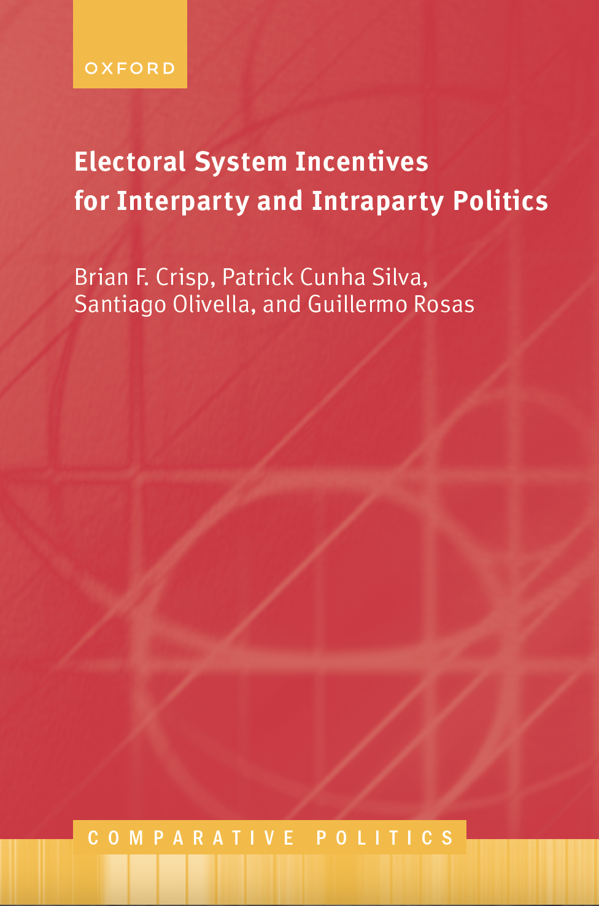

Welcome to Website of the
Electoral System Incentives for
Interparty and Intraparty Politics (I3)
Project
The book is now open access and can be accessed using the link below!
Electoral System Incentives for Interparty and Intraparty Politics uses novel computational tools and the most comprehensive and updated dataset on electoral systems to test whether electoral rules explain variation in interparty politics—the effective number of parties, parties’ locations in the policy space, congruence between citizens’ preferences and policy—and intraparty politics—the content of campaigns, the amount of constituency service provided, the shape of legislative institutions, levels of party discipline, and the balance struck between programmatic policy and pork barrel politics.
To supplement the book (available from Oxford University Press), this website includes additional material to help users understand how the rules that are components of an electoral system shape the political arena. We make available here an updated version of the dataset used in the book and replication files that will allow users to check and extend our work. We also provide a dashboard that will—after providing some simple information about an electoral system's component rules—tell users the type of incentives it will generate for dynamics between parties and relationships within parties.
If you use this website, please cite:
Crisp, Brian F., Patrick Cuhna Silva, Santiago Olivella, and Guillermo Rosas. 2025. Electoral System Incentives for Interparty and Intraparty Politics New York: Oxford University Press, pp. 1–309.